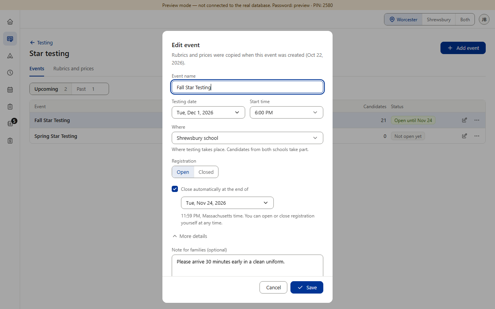
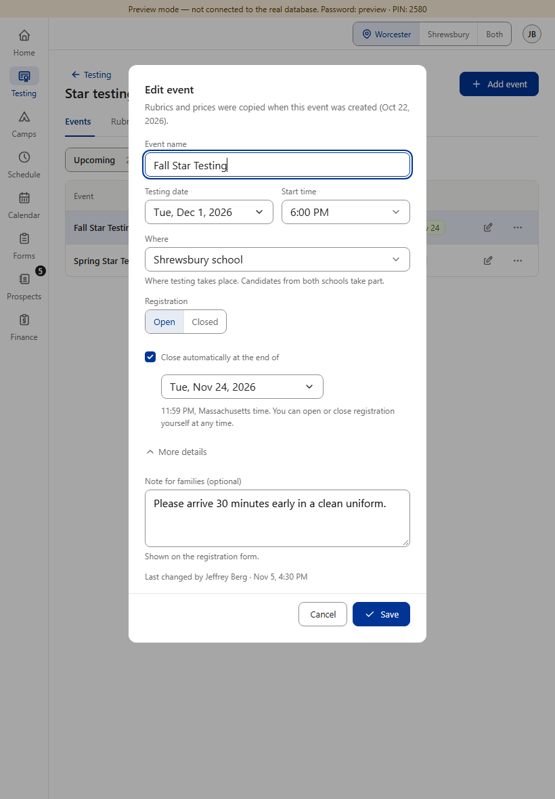
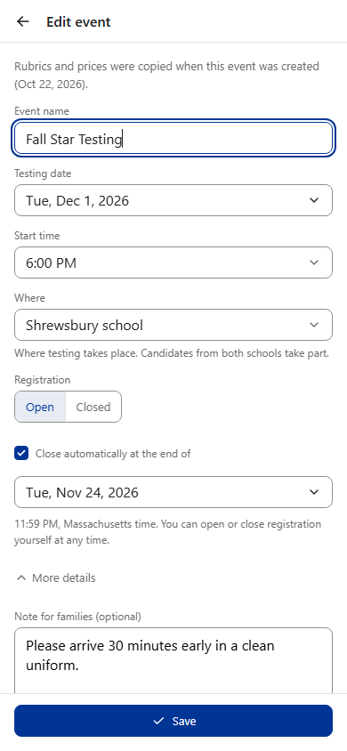
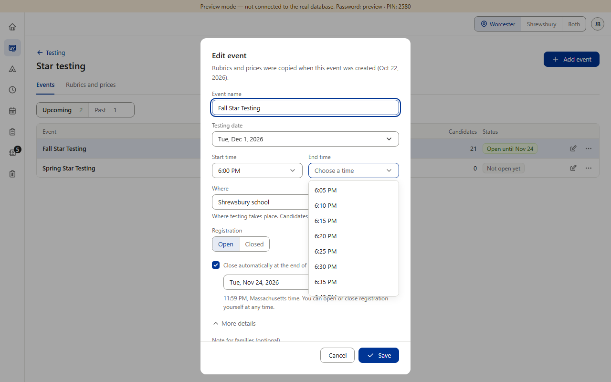
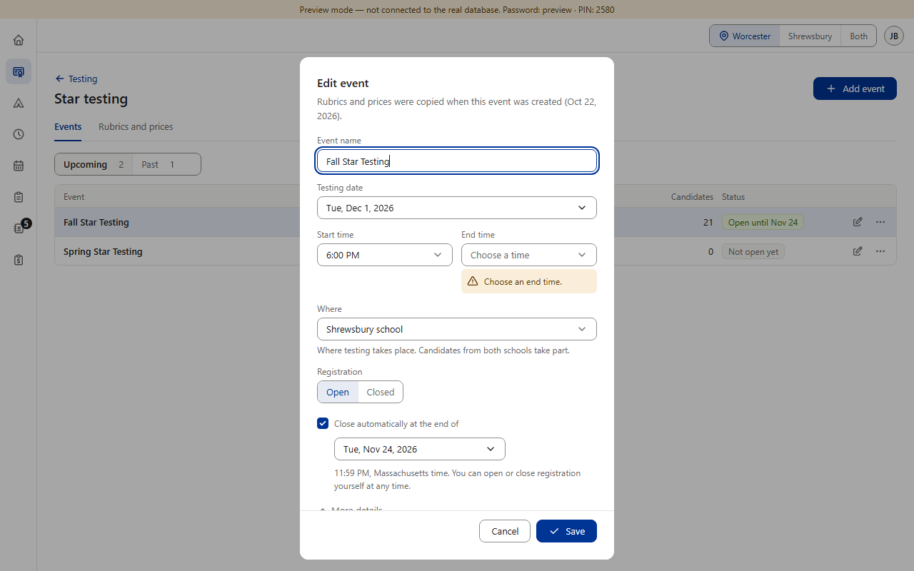
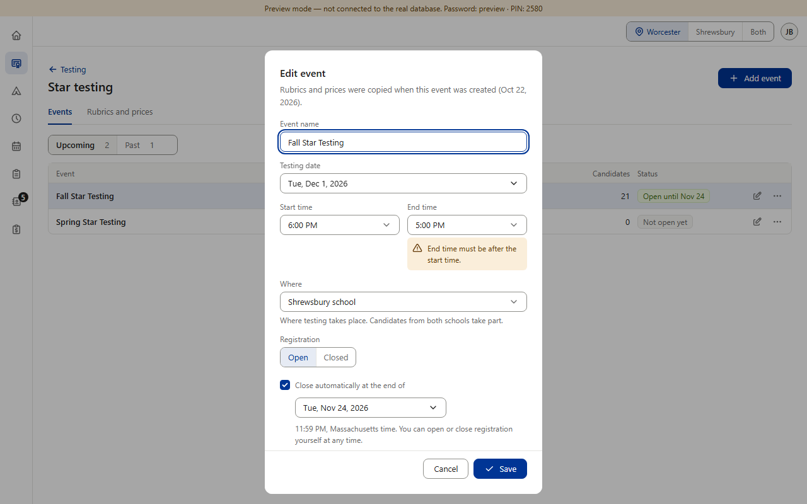
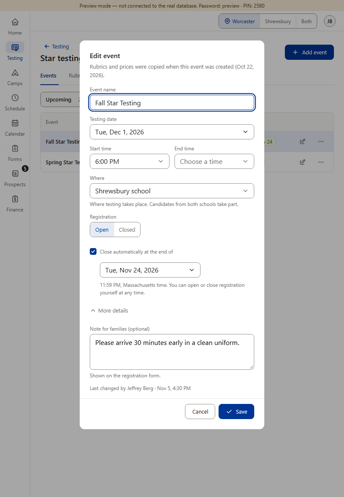
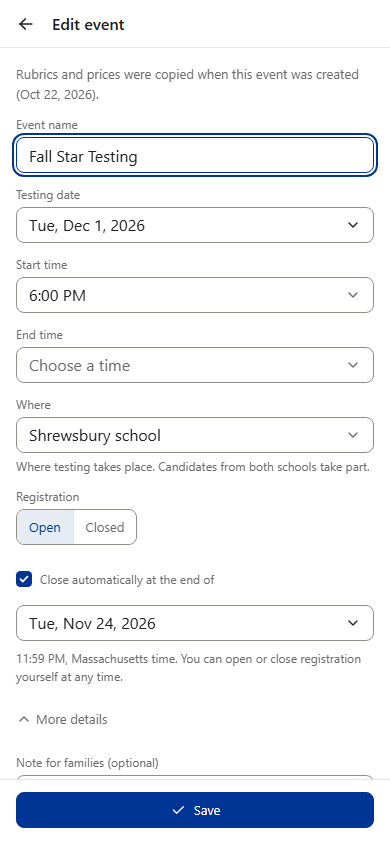
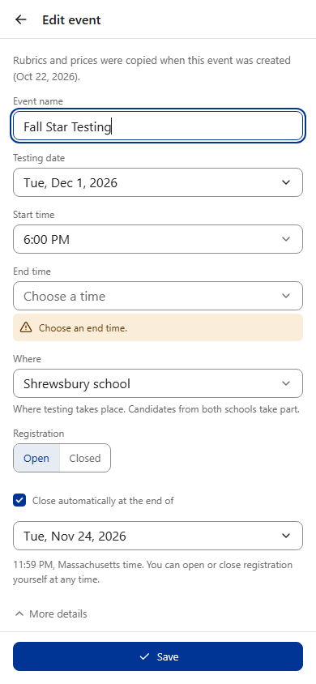
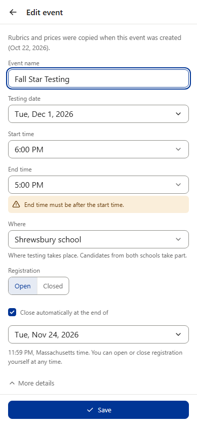

Star End time · 3 of 4 — Add event / Edit event dialog
A new required field “End time”, right after Start time, using the same shared time list (“Choose a time” while empty). It offers the times after the chosen start, every 5 minutes, up to 10:00 PM. Layout: Testing date moves to its own full-width row, and “Start time | End time” sit side by side on PC and tablet (stacked on phones, as today). Shown: the existing Fall Star Testing opened in Edit, End time not saved yet.
Today

PC 1280×800. “Testing date | Start time” share one row; there is no end time.

Tablet 820×1180, touch.

Phone 390×844, touch (full-screen page).
After
PC 1280×800. Testing date on its own row; Start time | End time below it. End time empty: “Choose a time”.

PC · End time list open. Starts at 6:05 PM (the first time after the 6:00 PM start) and runs to 10:00 PM.

Save with End time empty: “Choose an end time.” (same amber line as “Choose a start time.”)

End time not after the start (e.g. a start moved past a saved end): “End time must be after the start time.”

Tablet 820×1180, touch. Same layout as PC.

Phone 390×844, touch. One field per row: Testing date, Start time, End time.

Phone: “Choose an end time.”

Phone: “End time must be after the start time.”
What moved: only Testing date — from the left half of the Start time row to a full-width row of its own (it was already full width on phones). Where, Registration and the rest stay where they are. Save stays gray until End time is chosen, like Start time.
Rulebook decision “A” (approved): Star testing events get an End time as well as a Start time, so parents know when to pick up. Preview screenshots (fake database; the fake Fall Star Testing’s start was set to 6:00 PM in preview for these pictures, its date stays Tue, Dec 1, 2026). The “After” column is drawn over the real page — nothing in the app was changed. An event with no end time saved yet keeps showing only the start time, exactly as “Today”. Private testing times (one time) don’t change.